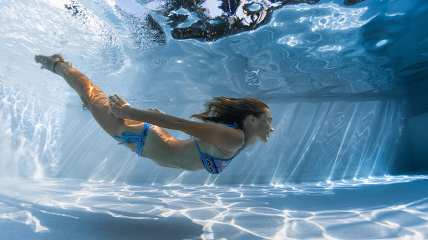

Спорт Жлобинщины
Разработка С.А.Зарубо
Волейбол
Волейбол
Волейбол
Плавание
Плавание
Плавание
Физические нагрузки непосредственно влияют на психоэмоциональное состояние человека.
Во время занятий спортом мы начинаем активно двигаться, усиливается кровообращение и учащается дыхание.
К клеткам головного мозга поступает больше кислорода, а значит, пропадает чувство усталости и сонливости.
ВОЛЕЙБОЛ
В структуре «Металлурга» появилась женская волейбольная команда. Что
за она, кто в составе, какие задачи?
В Жлобине стало на одну спортивную команду больше. На базе хоккейного клуба «Металлург»
создана женская волейбольная команда «Искра». Рассказываем, что это такое и как будет работать.
Вернуться вверх
ПЛАВАНИЕ
Пла́вание — вид спорта или спортивная дисциплина, заключающаяся в преодолении вплавь за наименьшее время различных дистанций.

При этом в подводном положении по действующим ныне правилам разрешается проплыть не более 15 м после старта или поворота
(в плавании брассом подобное ограничение сформулировано по-другому); скоростные виды подводного плавания относятся
не к плаванию, а к подводному спорту. Вольный стиль Вольный стиль — дисциплина плавания, в которой пловцу разрешается плыть любыми способами,
произвольно меняя их по ходу дистанции. В настоящее время все пловцы используют кроль. Брасс.
Техника брасса впервые была проанализирована датчанином Николасом Винманом (лат. Nicolas Wynman)
в книге «Пловец, или Диалог об искусстве плавания», изданной в 1538 году; на протяжении нескольких
столетий брасс занимал ведущее место во всех школах плавания.
Овер-арм (англ. overarm stroke) — усовершенствованный англичанами в середине XIX века народный способ
плавания на боку[en] (англ. sidestroke).
Плавание на спине
Плавание на спине впервые было включено как самостоятельный вид на Олимпийских играх 1900 года. В первые годы
пловцы пользовались перевёрнутым брассом. Первым крупного успеха в плавании кролем на спине добился американец
Гарри Хебнер, победивший на Олимпийских играх 1912 года; после этого в плавании на спине кроль быстро вытеснил брасс.
Брасс, баттерфляй
Плавание брассом стало самостоятельным видом программы на Олимпийских играх 1904 года. В середине 1930-х годов
в США и (чуть позже) в СССР появилась новая, более скоростная разновидность брасса — баттерфляй, который вытеснил
классический брасс. С 1953 года ФИНА выделила баттерфляй в самостоятельную дисциплину (в СССР подобное разделение
произошло в 1949 году).
Вернуться вверх